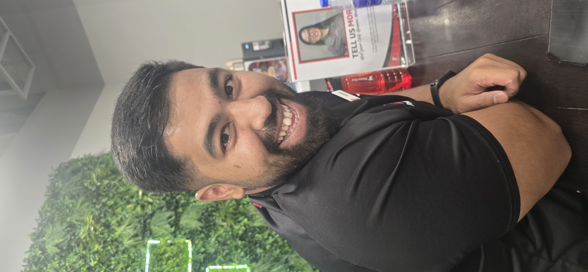

PERFORMANCE
Strength, conditioning, speed, agility, power and athletic development.
SPORTS PERFORMANCE • CONDITIONING • RECOVERY
Helping athletes and active individuals move better, perform better and recover with purpose through integrated coaching, movement and recovery.

ABOUT
Sulaiman Qadir is a Dubai-based sports performance professional combining coaching, conditioning, movement quality and structured recovery.
With 6+ years in the fitness industry, his work spans personal training, sports conditioning, corrective exercise, sports massage, recovery coaching and practical sports nutrition.
CORE POSITIONING
Performance, movement and recovery form the core professional identity.
Strength, conditioning, speed, agility, power and athletic development.
Assessment, corrective exercise, mobility, stability, technique and movement preparation.
Sports massage, mobility, stretching, PNF, readiness and recovery sessions.
SERVICES
Individualised support rather than a one-size-fits-all template.
Strength, speed, agility, power, work capacity and general physical preparation.
Strength, hypertrophy, body composition, mobility, conditioning and consistency.
Assessment, mobility, stability, technique, regressions and progressions.
Targeted massage, mobility, stretching, PNF, down-regulation and recovery planning.
Practical nutrition support for training, recovery and body-composition goals within professional scope.
THE METHOD
Track response, then adapt the plan.
Goals, history, movement and readiness.
Mobility, activation and warm-up.
Strength, power, speed and conditioning.
Recovery matched to training demand.
RPE, soreness, performance and readiness.
Adjust priorities and progression.
SPORTS CLUB PARTNERSHIPS
Complementary support alongside coaching, S&C, physiotherapy and medical teams.
Individual and small-group conditioning.
Mobility, activation and readiness.
Massage, mobility, stretching and down-regulation.
Structured blocks adapted to competition demands.
Movement and physical-performance review.
Age-appropriate movement, speed and strength foundations.
90-DAY CLUB PILOT
Profiling, baselines and communication.
Conditioning, recovery and response monitoring.
Review, adjust and define next priorities.
QUALIFICATIONS
Exercise programming and client coaching.
Practical nutrition guidance for performance and recovery.
Movement assessment, mobility, stability and progression.
Sports massage, mobility, PNF and recovery-focused support.
CONTACT
Athlete, private client, club, academy, clinic, gym or wellness facility—start with a conversation.